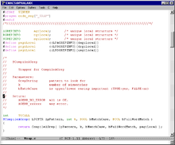
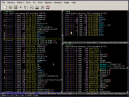

Emacs and its derivatives are a family of text editors that are characterized by their extensibility. The manual for the most widely-used variant, GNU Emacs, describes it as "the extensible, customizable, self-documenting, real-time display editor". Development of the first Emacs began in the mid-1970s and continues actively as of 2014. Emacs has over 2,000 built-in commands and allows the user to combine these commands into macros to automate work. The use of Emacs Lisp, a variant of the Lisp programming language, provides a deep extension capability.
The original EMACS was written in 1976 by Richard Stallman and Guy L. Steele, Jr. as a set of Editor MACroS for the TECO editor. It was inspired by the ideas of the TECO-macro editors TECMAC and TMACS.
The most popular, and most ported, version of Emacs is GNU Emacs, which was created by Stallman for the GNU Project. XEmacs is a common variant that branched from GNU Emacs in 1991. Both of the variants use Emacs Lisp and are for the most part compatible with each other.
 Emacs is, along with vi, one of the two main contenders in the traditional editor wars of Unix culture.